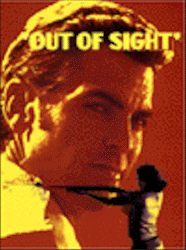
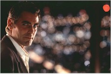
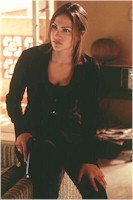
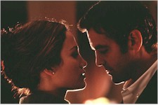

Contents | Features | Reviews | News | Archives | Store |
 |
|
| Movie Credits | Buy It! |
Out of Sight
Review by Eddie Cockrell
Posted 26 June 1998
|  | Directed by Steven Soderbergh Starring
George Clooney, Jennifer Lopez, Screenplay by Scott Frank, |
Every once in a while a Hollywood movie comes along – projects, they call them out there – in which everyone involved seems to be having a ball with the material and with each other. Out of Sight is one of those movies, a steamy yet glacially cool adaptation of the Elmore Leonard novel by the same production team that mounted Get Shorty. In many ways this is a better film, as the jarring juxtaposition of searing Florida sun and metallic Michigan slush is closer to the heart of Leonard's best writing. If the coincidence-driven complexities of character and plot require a bit more concentration, the dramatic payoff is more substantial as well. Call Out of Sight the movie for people who actually read Elmore Leonard's books.
Using his charm to rob yet another bank, career recidivist Jack Foley (George Clooney) is foiled when he floods the engine of his ancient Honda and is sent to Florida's Glades Prison. During a daring prison break Foley winds up in the getaway car's trunk with federal marshall Karen Sisco (Jennifer Lopez), who shares the escapee's enthusiasm for classic movies (Bonnie and Clyde, Network, "Redford when he was younger"). To the astonishment of Foley's pal Buddy Bragg (Ving Rhames), he even makes plans to see her again – just as she's persuading their cohort Glenn Michaels (Steve Zahn) to drive her to safety. Equally incredulous is Karen's father (Dennis Farina), who reacts with cautious bemusement to his daughter's thinly-veiled attraction to Foley.
Meanwhile, Jack's broken out for a reason: years ago, while incarcerated at Lompoc, he learned of a fortune in uncut diamonds stashed at the palatial mansion of incarcerated Wall Street trader Richard Ripley (Albert Brooks). As attractive as that one big score is, Foley has competition for it in the person of Maurice "Snoopy" Miller (Don Cheadle), an unpredictably violent ex-boxer. Also figuring in the action is small-time hood Chino (Luis Guzman), Foley's sardonic ex Adele (Catherine Keener), Snoopy's muscle Kenneth (Isaiah Washington) and White Boy Bob (Keith Loneker), and Ripley's maid Midge (Nancy Allen).
Much of the movie's emotional pull comes from the instant and undisguised attraction of Foley and Sisco, who live at opposite ends of the moral spectrum but are determined to be together somehow. He's not interested in going back to prison and she's determined to stop their heist, but that doesn't prevent them from finally hooking up during a Detroit snowstorm in a showstopping love scene that ignites the screen. Languid, provocative and playful, it is the most dazzlingly edited romantic interlude since Donald Sutherland and Julie Christie melted into each other in Nicolas Roeg's Don't Look Now (Out of Sight was edited by the legendary Anne V. Coates, who earned her first credit for The Pickwick Papers in 1952 and has an extensive filmography that includes both Lawrence of Arabia and Ragtime).
Movies as confidently stylish as Out of Sight don't happen without extensive planning, and credit for the film's success begins with the audacious visual choices of director Steven Soderbergh (sex, lies & videotape, King of the Hill). Using a decidedly retro style that incorporates freeze-frames, zooms and a liberal use of rack focus shots, he weaves together an intricate flashback structure with seeming effortlessness – can this really be the same Steven Soderbergh that made that perfectly awful remake of Criss Cross, The Underneath, only four years ago?
Realizing this vision is cinematographer Elliot Davis, who shot that movie as well as the director's King of the Hill, Things to Do in Denver When You're Dead, Spike Lee's Get on the Bus, the cult favorite Shakes the Clown and the upcoming Breakfast of Champions. The differences between north and south are jarring, with the bleached tones of the prison yards and south Florida giving way to the diamond-hard, snow-bound monochrome of Detroit and the absurdly extravagant warmth of the Ripley mansion.
The transient nature of Foley and Bragg is in direct contrast to the trader's ostentatious house, an effect achieved with notable, authentic detail by set designer Gary Frutkoff, who brought the Great Depression to life for Soderbergh's little-seen gem King of the Hill.
Sets and style are important, but inhabiting that framework with appealing eccentrics requires a steady hand with actors up to the challenge. Obviously hungry for a change after the frustrations of Batman & Robin and the oddly dismissed Peacemaker, Clooney attacks his character with a suave ferocity. He's finally a star and he knows it, but like the typical Leonard protagonist he's pragmatic enough to realize that it might not last. Lopez matches him stride for stride, tender and tough in equal measure (remember, she's been acting for less than a decade).
Of equal importance is the continued respect for Leonard's words shown by screenwriter Scott Frank, who brings the same tremendous dramatic instinct to Out of Sight that is the foundation of Get Shorty – arguably the author's most problematic and atypical contemporary book. By adding the aforementioned love scene and sticking with the Lompoc flashback (the most potentially confusing element of the story, ultimately finessed with minimal narrative disruption), Frank exhibits an allegiance to the source material that is as noble as it is successful.
David Holmes original music is a perfect compliment to the R & B numbers selected by music supervisor Anita Camarata, which include "It's Your Thing" and "Fight the Power (Pt. 2)" by The Isley Brothers, Mongo Santamaria's "Watermelon Man," Willie Bobo's "Spanish Grease" and Walter Wanderley's "One Note Samba."
Here's an idea for Danny DeVito and the other principals of his production company, Jersey Pictures: why not establish a repertory company dedicated to performing nothing but Leonard's works? Everyone here qualifies: Clooney is the typically placid miscreant, while Lopez is the living embodiment of Leonard's tough, capable women. Farina's a natural (he was Ray "Bones" Barboni in Get Shorty), and Boogie Nights alumni Guzman and Cheadle have the improvisational chops to make Leonard's dialogue sing. As for Michael Keaton and Samuel L. Jackson, moviegoers are advised to see Quentin Tarantino's terrific Jackie Brown to appreciate the subtleties of their sly cameos. On the strength of this smart, sexy movie, DeVito's sold at least one subscription – and Jersey Films is well on its way to owning the Leonard franchise.
Contents | Features | Reviews | News | Archives | Store
Copyright © 1999 by Nitrate Productions, Inc. All Rights Reserved.